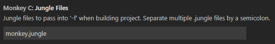

Jungle Reference Guide
Welcome to Jungles1, the build language for Connect IQ apps. This guide will cover the following topics:
The syntax of the jungle build language
Using build exclusions to tailor your apps at build time
Managing monkey barrels
Using Jungles with Visual Studio Code or from the command line
Jungle Syntax
Jungle files contain build instructions that are made up of qualifiers, local variables, and values. Jungle files may also contain comments. Each build instruction is made up of qualifier-value or variable-value pairs separated by an equal sign (=), and terminate with a new line character.
Qualifiers are analogous to the device and family qualifiers described in the previous section. They are treated as reserved words, can only be set equal to other qualifiers, and are globally scoped. Qualifiers and their properties can be used with the dereference operator $(VAR) and are evaluated after all Jungle files for a project have been processed.
Project Qualifiers
Project qualifiers specify global information that applies across the project. Project qualifiers have x properties that can be referenced by following project with a dot (.) and a property name:
| Qualifier | Description |
|---|---|
manifest | Path to the manifest file for the project |
optimization | Specifies the optimization level for the project. See the --optimization compiler option for details |
typecheck | Specifies the type check level. See the --typecheck compiler option for details |
Device Qualifiers
Device qualifiers have six properties that can be referenced by following a qualifier with a dot (.) and a property name:
| Qualifier | Description |
|---|---|
annotations | Monkey Barrel annotations applicable to this qualifier |
barrelPath | Monkey Barrel file (.barrel) paths applicable to this qualifier |
excludeAnnotations | Annotations to exclude when building for this qualifier |
lang | The language(s) supported by this qualifier |
personality | Monkey style file (.mss) paths applicable to this qualifier |
resourcePath | Resource file (.xml) paths applicable to this qualifier |
sourcePath | Source file (.mc) paths applicable to this qualifier |
Local Variables
Variables are a convenient way of re-using values, such as long path strings. Unlike qualifiers, local variables have no properties, cannot be set equal to a qualifier, and are locally scoped. Variables can be used with the dereference operator $(VAR) and are evaluated after the Jungle file in which they are defined has been processed.
Values
Values are a list of one or more string values that represent the value of a particular qualifier, qualifier property, or local variable. Multiple list items are separated by semicolons (;).
Comments
Lines preceded with a hash mark (#) are treated as comments and are ignored by the compiler.
A basic Jungle file build instruction will use this pattern (comments are optional):
# This is a comment
qualifier[.property] = valueJungle files must be named with a .jungle extension, and are kept in the root of the Connect IQ project.
Note: Dereferenced qualifiers are evaluated "lazily", which means that when building for a specific device, all qualifiers and properties are resolved for that device after all Jungle files are processed, while local variables will be resolved after processing the Jungle files in which they are defined. The exception to lazy evaluation is when a qualifier or local variable is dereferenced when setting that qualifier or variable, in which case the qualifier or variable is evaluated during Jungle file processing.
Sources and Resources
Setting source and resource paths are a common use for Jungles. In addition to tailoring source code and resources to particular devices to improve user experience, it can also help with memory management since only the sources defined in the Jungle file are compiled into the executable.
As a practical example, assume an application will use a shared set of resources for fēnix devices contained in a fenix-resources directory at the root of the project. Since these products are not all in the same families, a custom Jungle file must be written to tell the compiler these devices should use this shared resources folder. We can start by setting the resource path for fēnix 5:
# Set the fenix 5 resource directory
fenix5.resourcePath = $(fenix5.resourcePath);fenix-resourcesLet's break this down a little:
- fenix5.resourcePath
The device qualifier for the fēnix 5 defined in the default Jungle file followed by the resourcePath property
- $(fenix5.resourcePath);
The original value of the fenix5.resourcePath property, accessed with the dereference operator
$(VAR).
The default Jungle file defines the base resource path as the resource directory in the root of the project, and all devices inherit this. It also defines device-specific and family-specific resource directories that can be used implicitly in any project. Including this in the resource path ensures that the device can still look in these directories for resources if required resources aren't found in more device-specific locations. If this is omitted, it would tell the compiler to only look for fenix 5 resources in the fenix-resources directory.
- fenix-resources
The shared directory we want to add as a resource location for the device.
If this looks familiar, it's because it's pretty similar in concept to setting PATH environment variables. Path precedence goes from left to right in Jungle files, so the compiler will process inherited resources first before processing resources found within 'fenix-resources', which can potentially override resources already defined. Adding the fenix-resources directory to other fēnix devices just requires similar instructions for each additional device:
# Set the fenix 5 resource locations
fenix5.resourcePath = $(fenix5.resourcePath);fenix-resources
# Set the fenix 3 resource locations
fenix3.resourcePath = $(fenix3.resourcePath);fenix-resources
...Setting source paths works in essentially the same way, allowing apps to selectively include specific source code on a per-device or per-device family basis. As an example, consider an app that has common code shared by all products in the source folder and product-line specific source code in other folders: wearable-source for wearable devices, edge-source for bike computers, and handheld-source for handheld mapping units. The following demonstrates how to use a jungle to configure this project:
# Reset the base source path to include only source files in the source folder. The
# default source path includes source files in the project folder and all subfolders.
base.sourcePath = source
# Set the source path for wearable devices by device family
round.sourcePath = $(round.sourcePath);wearable-source
semiround.sourcePath = $(semiround.sourcePath);wearable-source
# Set the source path for edge devices by device
edge530.sourcePath = $(edge530.sourcePath);edge-source
edge830.sourcePath = $(edge830.sourcePath);edge-source
edge1030.sourcePath = $(edge1030.sourcePath);edge-source
# Set source path for handheld devices by device
gpsmap66.sourcePath = $(gpsmap66.sourcePath);handheld-source
oregon7xx.sourcePath = $(oregon7xx.sourcePath);handheld-source
rino7xx.sourcePath = $(rino7xx.sourcePath);handheld-sourceLocalization Resources
Localization strings are a kind of resource in Connect IQ, but have a slightly different syntax since multiple languages may be supported by a single device or device family. Suppose an application supports both English and Spanish, and all of the fēnix English localization resources are stored in a fenix-resources-eng directory, while the Spanish localization resources are kept in a fenix-resources-spa directory.
# Set the fenix 5 English language resource location
fenix5.lang.eng = $(fenix5.lang.eng);fenix-resources-eng
# Set the fenix 5 Spanish language resource location
fenix5.lang.spa = $(fenix5.lang.spa);fenix-resources-spa
# Set the fenix 3 English language resource location
fenix3.lang.eng = $(fenix3.lang.eng);fenix-resources-eng
# Set the fenix 3 Spanish language resource location
fenix3.lang.spa = $(fenix3.lang.spa);fenix-resources-spa
...The lang qualifier property is used in this build instruction to specify that a localization resource is being set, and is followed by an additional ISO 639–2 language code localization qualifier to indicate for which language the supplied resource locations are intended. A list of supported localization qualifiers can be found in the Strings section. Specifying an unsupported localization qualifier will result in an error at compile time.
When specifying localization resources within Jungle files, the supported languages must also be set in a project's manifest, otherwise the associated localization overrides will be ignored.
Excluded Annotations
In some cases, there are specific modules, classes, methods, or variables that should only be used by a subset of devices, but excluding an entire source file is excessive. The excludeAnnotations qualifier property allows build instructions to specify specific annotations that will be excluded when an application is built. This may help save memory during app execution on a device.
A common reason for excluding source is when an application uses one algorithm that takes advantage of the latest APIs on newer devices, but must use a simpler algorithm on older devices that don't have the latest APIs available. For example, the following example shows an app that has two methods—one that uses the newer Sensor.AccelerometerData, and one that relies on Info.accel data:
import Toybox.WatchUi;
const experimental = Toybox.Sensor has :AccelerometerData;
class MyAmazingAppView extends WatchUi.View {
function onUpdate(dc) {
sharedLogic();
if (experimental) {
// If a newer device, call the new logic
newHotnessLogic();
} else {
// If an older device, call the old logic
oldAndBoringLogic();
}
}
function newHotnessLogic() {
// Advanced functionality using Sensor.AccelerometerData
}
function oldAndBoringLogic() {
// Basic functionality using Sensor.Info.accel data
}
function sharedLogic() {
// Shared logic
}
}This will function properly as-is, but all of the code is included regardless of the build target. If the app is approaching memory limits, it may be useful to exclude the unused method, especially if the method is sufficiently large and impacts available memory. To do this, set the excludeAnnotations qualifier property in the Jungle file to the appropriate annotation value:
# By default, exclude the new, experimental logic
base.excludeAnnotations = experimental
# Exclude the old, boring logic from fenix 5
fenix5.excludeAnnotations = boringThen, update the application to use annotations:
import Toybox.WatchUi;
(:boring) const experimental = false;
(:experimental) const experimental = Toybox.Sensor has :AccelerometerData;
class MyAmazingAppView extends WatchUi.View {
function onUpdate(dc) {
// If a newer device, call the new logic
// otherwise, call the old logic
myAlgorithm();
}
(:experimental)
function myAlgorithm() {
sharedLogic();
if (experimental) {
newHotnessLogic();
} else {
throw new MyException("Toybox.Sensor.AccelerometerData not supported!");
}
}
(:boring)
function myAlgorithm() {
sharedLogic();
oldAndBoringLogic();
}
(:experimental)
function newHotnessLogic() {
// Advanced functionality using Sensor.AccelerometerData
}
(:boring)
function oldAndBoringLogic() {
// Basic functionality using Sensor.Info.accel data
}
function sharedLogic() {
// Shared logic
}
}Monkey Barrel Management
Barrels can also be added manually to the project's main Jungle file using the barrelPath qualifier property:
# Include all the Barrels from the 'barrels' directory at the root of the project
base.barrelPath = barrels
# Include a specific Barrel from the 'barrels' directory
base.barrelPath = barrels/IconLibrary.barrel
# Include multiple, specific Barrels from the 'barrels' directory
base.barrelPath = barrels/IconLibrary.barrel;barrels/GraphLibrary.barrelIt's also possible to use the annotations qualifier property to import select, annotated portions of a barrel. This is useful when a Barrel contains a library of classes and methods, but an application only needs to use a fragment of the library. For example, assume the GraphLibrary barrel imported above contains several different graphing methods, but an application only needs to use a bar graph. The Barrel author was kind enough to annotate each method, so rather than using the entire Barrel, we can limit imported code to only those methods that are needed:
# Import the 'bar' annotated method from the GraphLibrary Barrel
base.GraphLibrary.annotations = barIn order for the compiler to correctly resolve Monkey Barrels, Barrel dependencies must also be added to the project's manifest file:
<iq:barrels>
<iq:depends name="IconLibrary" version="0.0.0"/>
</iq:barrels>Once completed, the specified Barrels will be available for use in a project.
Defining Project Dependencies
What if a quick change is made to a developer's barrel code in the development process of a dependant application? It would be cumbersome to export a barrel and update the dependencies in the manifest.xml every time the code is changed in the Barrel project. Connect IQ application projects can have direct Monkey Barrel project dependencies removing the need for these steps.
Adding a Barrel project dependency is done by specifying the Jungle file or files of the project or projects depended upon within the barrelPath. Jungle files can be specified individually or grouped in the barrelPath.
For example, a developer is creating an application, but she wants to include a standard set of icons that define her brand. She realizes in development that she needs to add a few more icons and decides to finally create that super specialized function that she is always needing. She can work dynamically on both projects and link her application project to her Barrel code by adding the Barrel project's Jungle file to the barrePath like this:
# Include a specific Barrel project
base.barrelPath = MyIconBarrel/MyIconBarrel.jungleAnother developer is working on a math intensive application. Thankfully, someone has created an extensive MathLibrary Barrel that he has pulled in. He also has a local MyIconLibrary Barrel project with some standard icons. He has a set of icons for round devices defined in a roundIcons.jungle file that he wants to use in his application. He includes both the packaged MathLibrary.barrel and his own roundIcons defined in his local barrel project like this:
# Include a specific Barrel from the 'barrels' directory and a Jungle from a Barrel project
base.barrelPath = barrels/MathLibrary.barrel;MyIconBarrel/roundIcons.jungleOur second developer realizes that he wants to support rectangle devices as well. These have been defined in a rectangleIcons.jungle. He includes multiple build instructions from MyIconBarrel by grouping the Jungle files in square brackets [] like this:
# Include a specific Barrel from the 'barrels' directory and multiple Jungles from a Barrel project
base.barrelPath = barrels/MathLibrary.barrel;[MyIconBarrel/roundIcons.jungle;MyIconBarrel/rectangleIcons.jungle]Take a look at the (../Core_Topics/Shareable.md Libraries#shareablelibraries) chapter to learn more about Monkey Barrels and how they can be used.
The Default Jungle File
The Connect IQ SDK includes a default Jungle file, which is always applied to projects even if no custom Jungle files are present. It defines a base qualifier, which represents all source files (.mc) contained in the project, and all resource files found in the resources at the root of a Connect IQ project. It also defines default device, family, and language qualifiers that are the basis for the qualifier scheme described in the previous section.
When a project is built, the instructions from the default Jungle file are applied first, then any instructions from custom Jungle files are applied. This makes it possible for customizations to override the default build instructions.
Using Jungles with Visual Studio Code
By default, each project is configured to look for a monkey.jungle file in the root of the project and will use it if it exists. However, if a project is organized differently or a different Jungle file name is preferred, the Jungle file location can be set easily by going to File > Preferences > Settings and editing the Monkey C settings:

Using Jungles from the Command Line
For those who prefer to use the monkeyc shell command to build projects rather than Visual Studio Code, the -f option is required and accepts a list of Jungle files, separated by semicolons (;) or colons (:):
monkeyc -o myApp.prg myApp.mc -d fenix5 -f monkey.jungle;monkey2.jungleIn lieu of this new option, the -z option to specify resource paths, the -x option to specify build exclusions, the -m option to specify the manifest file, and the ability to specify source paths have been deprecated and will be removed in a future SDK release. Here is a general description of how this will work:
When specifying a Jungle file with the
-foption, the default Jungle file will first be applied to the project before the specified Jungle file is appliedIf more than one Jungle file is provided after the
-foption, precedence will be given to the build instructions in the last Jungle file in the listIf no resource or source options are specified, either as a Jungle file the compiler will attempt to apply the default Jungle file to the project
Use of both the
-foption and any deprecated options in combination is not allowed and will cause a compiler error
The manifest file of the project must be specified within a Jungle file passed at the command line and any Jungle can contain this specification. Here is what it looks like:
project.manifest = manifest.xmlThere can be only one2 manifest file defined within the set of jungle files provided. When relative paths are used within a jungle file the path will be resolved against the Jungle file's parent directory. Relative paths within the default.jungle are resolved against the parent directory of the manifest file that is found.
Note: Legacy projects using -m, -x, -z, and/or supplying source files at the command line will result in a compiler warning.